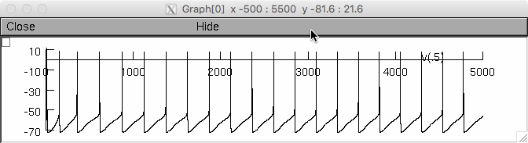
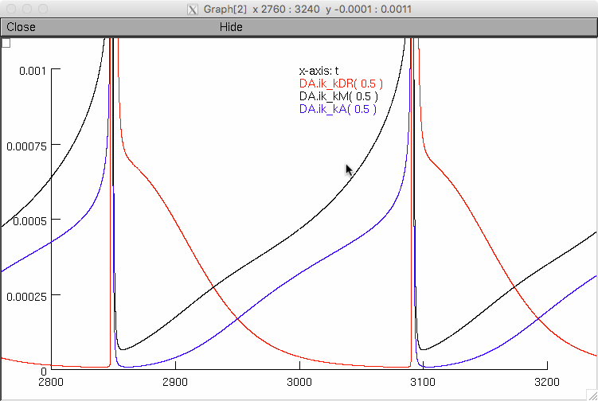
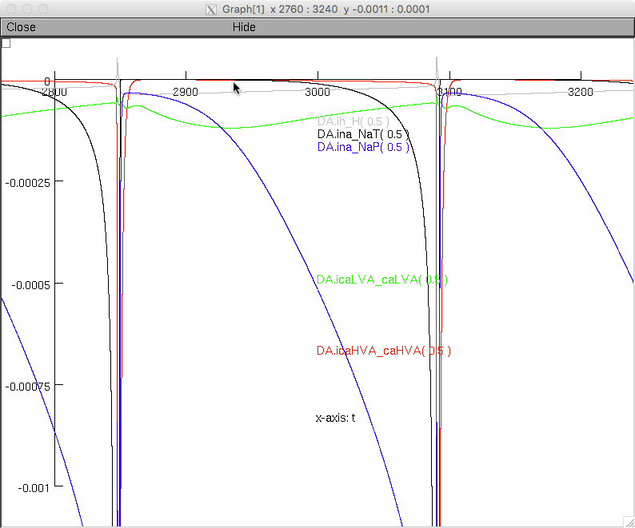
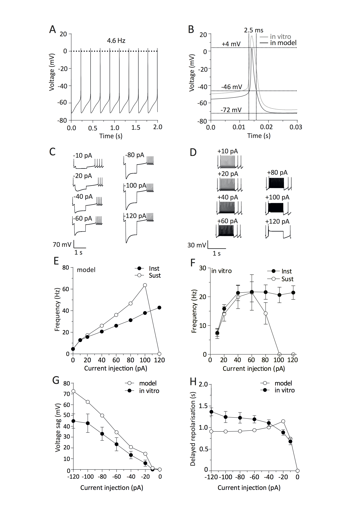
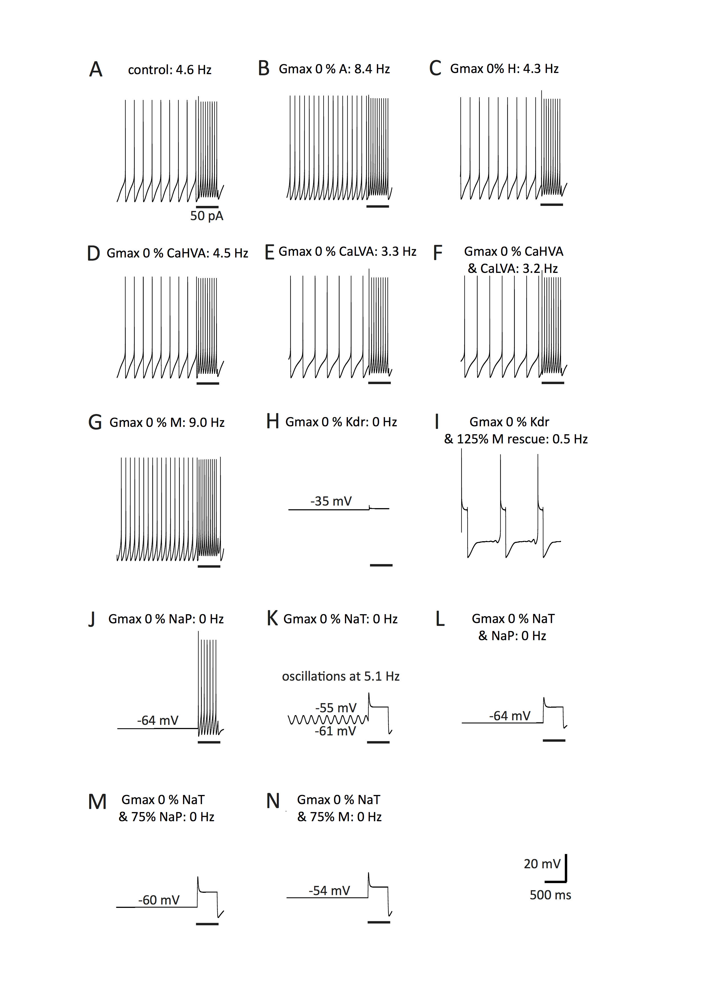
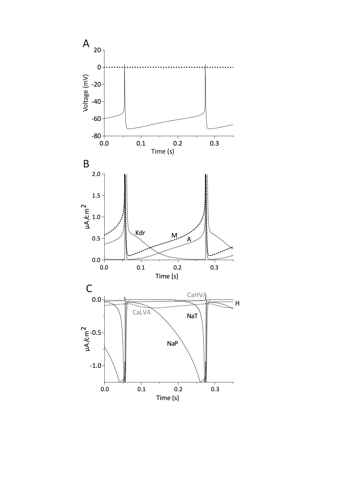
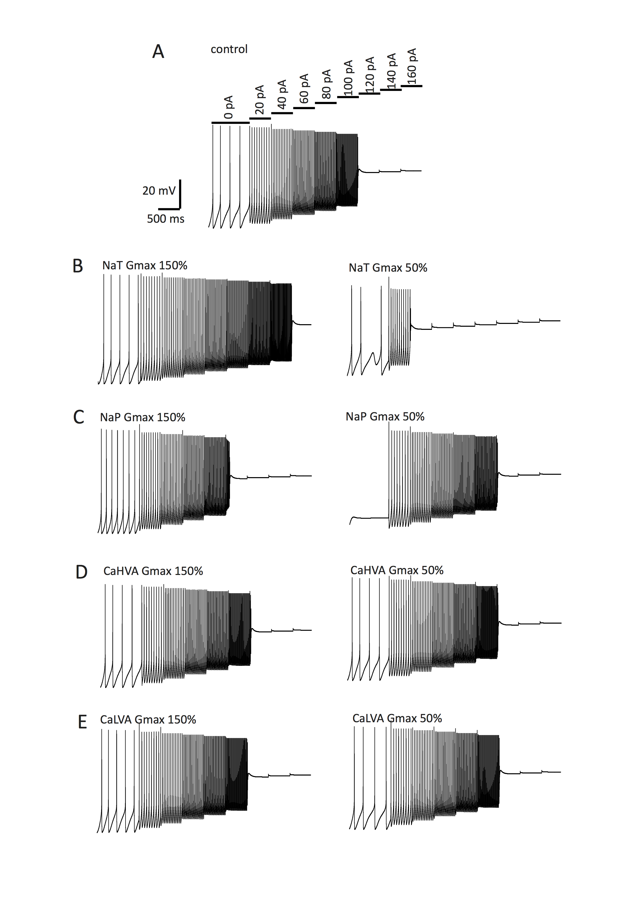

All data and simulations contained herein are taken from Dougalis, A.G., Matthews, G.A.C., Liss, B. & Ungless, M.A. (2017). Ionic currents influencing autorhythmicity and pacemaking in dopamine neurons of the ventrolateral periaquaductal gray and dorsal raphe nucleus (vlPAG/DR): a voltage-clamp and computational modeling study. Journal of Computational Neuroscience, doi: 10.1007/s10827-017-0641-0. [Apr 3-2017. Epub ahead of print] All conductance files are organised in a modular form for simplicity in *.mod file format (nine files). Current descriptions are based on experimental data from adult brain slices and are given a Hodgkin and Huxley formalism by describing the voltage and time dependence of the activation and inactivation gating variables with single order Boltzmann functions. To run the simulations make sure that you have NEURON installed in your computer. Download the vlPAG/DRN model folder containing all simulation files. Under mswin: ------------ Run the mknrndll.exe (from the NEURON installation folder) and specify the vlPAG/DRN DA model folder as the target folder in order to compile the .mod files contained therein into an nrnmech.dll library file. Under unix/linux: ---------------- Type nrnivmodl in the terminal window after cd'ing to the extracted folder. If you need more help see the file: https://senselab.med.yale.edu/ModelDB/NEURON_DwnldGuide.html After you have compiled the mod files: -------------------------------------- The main hoc initiation file of the model is named mosinit.hoc. Double click on this to load automatically 1. the membrane mechanisms (given that you have compiled correctly the nrnmech.dll file of all .mod files contained in this folder in the previous step) and 2. four successive session files (.ses) that contain the required Graphical user Interface to run simulations, visualise the results, reproduce results from figures 7-10 from Dougalis et al., 2017. J Comput Neurosci and save all results from resulting simulations to a file (vlPAG_DRN Analysis.dat) if required. Double clicking the vlPAG_DRN DA model.hoc file will load NEURON and you should expect to get a welcome message and a help file loading automatically when you follow the instructions. Read the help file and inspect the simulator panels and graphical windows. The three graphical windows monitor the voltage (in mV) of the DA neuron (top window) and the inward (middle window) and outward (bottom window) current (in mA/cm2) flowing in simulation time (in ms, set to total simulation time of 5000ms) for all ionic conductances of the model. The simulations reproduce figure 9 from Dougalis et al., 2017 J Comput Neurosci. Figures 9a, b, and c are represented:    Using the current/voltage clamp electrode located on the DA neuron, current clamp injections are possible for predifined polarity, duration and amplitude. Use these to explore the H-current mediated voltage sag and A-type mediated delayed reporalisation as well as instantaneous/sustained firing and threshold for depolarisation block and thus reproduce Figures 7 and 10 from Dougalis et al., 2017 J Comput Neurosci. Use the electrode in voltage clamp mode to observe the current flowing from indvidual ionic conductances during the voltage steps. Finally, using the parameter box, the user has full access to experiment with the model by altering a number of critical parameters controling individual conductances (reversal potential, maximal conductance, midpoints and slope of activation and inactivation of the gating mechanisms).For instance, by changing the maximal conductance (gbar) of any ionic conductance while observing the firing rate the data in Figure 8 from Dougalis et al., 2017 J Comput Neurosci can be reproduced. Further parameters that control the model behavior including, the rate of activation/inactivation of the gating mechanisms, can be accessed from the NEURON main menu through the following path NEURON main Menu--Tools--Distributed_Mechanisms--Viewer--Name_Values--Parameters. Any queries or problems with the model can be addressed to antoniosdougalis at hotmail.com last model file update: 17th April 2017, Antonios Dougalis Figures from the paper: Fig. 7:  Fig. 8:  Fig. 9:  Fig. 10: 